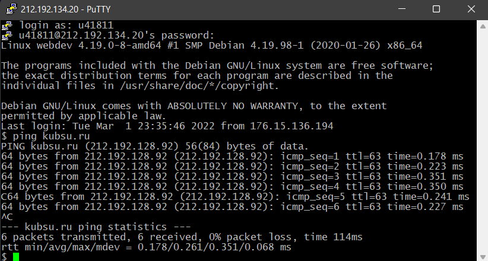
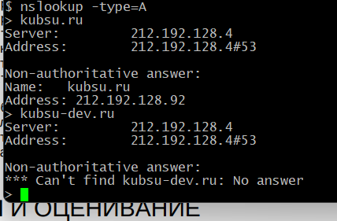
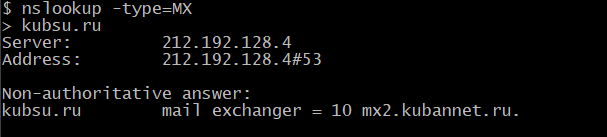
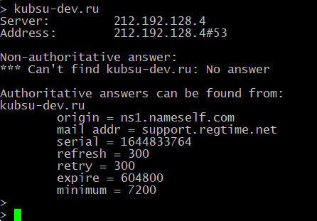
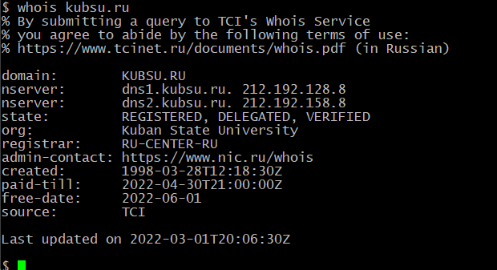
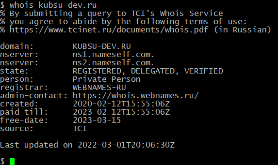
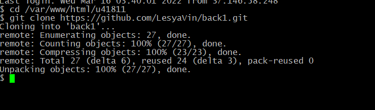
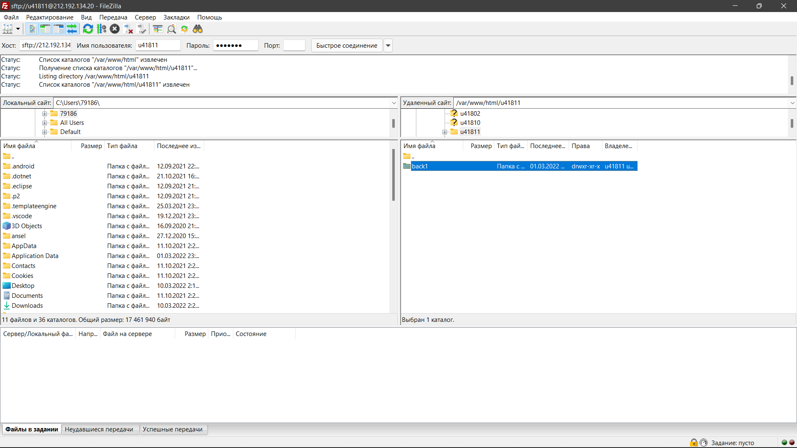
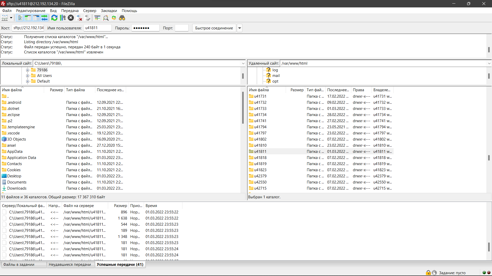

Программа putty (клиент для различных протоколов удалённого доступа)
Авторизация и проверка пинга (промежуток времени, за который отосланный пакет проходит через сеть до другого сервера) от kubsu-dev до kubsu
nslookup (инструмент сетевого администрирования для запросов с целью получения доменного имени, IP-адреса или другой информации) с помощью -type=A узнаем подробные сведения о действующем соединении
 с помощью -type=MX узнаем основную DNS запись для электронной почты
 показывает WHOIS о домене (сетевой протокол прикладного уровня, базирующийся на протоколе TCP. Основное применение — получение регистрационных данных о владельцах доменных имён, IP-адресов и автономных систем) C помощью whois узнаем информацию о том, кто владеет доменом
Gitclone C помощь действий и команд на скриншоте репозиторий был склонирован на удаленный сервер kubsu-dev
Подключение к учебному серверу с помощью FTP клиента Папка моего пользователя, открытая с помощью FileZilla (клиент с открытым исходным кодом для Windows, macOS и Linux. Имеет настраиваемый интерфейс с поддержкой смены тем оформления. Оснащён возможностью перетаскивания объектов, синхронизацией каталогов и поиском на удалённом сервере.)
Успешная передача файлов из папки моего пользователя